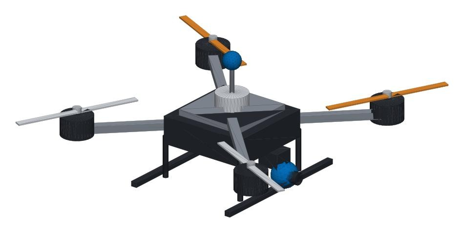
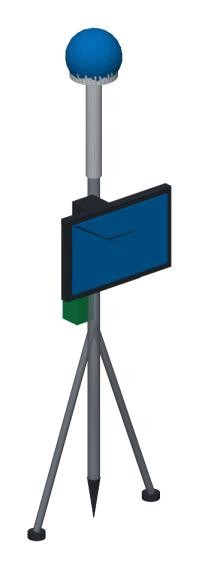

RTK drone
RTK GNSS, a mapping camera and 30+ minutes of flight. One sortie covers a village.
The drone gives the whole village in one sortie. The rover settles the corners the camera can't: under trees, on unmarked bunds, wherever two owners disagree.
Concept models built from our CAD. Drag to rotate, then pick a numbered part to see what it does.
The survey drone carries the RTK GNSS module, the mapping camera and the flight controller. The field rover carries the GNSS antenna, a tablet cradle, the battery with IMU, and a bipod.


RTK GNSS, a mapping camera and 30+ minutes of flight. One sortie covers a village.
A pole-mounted RTK receiver with a tablet and a battery that lasts a full field day.
Use CORS corrections where available. Bring a portable base station to remote areas.